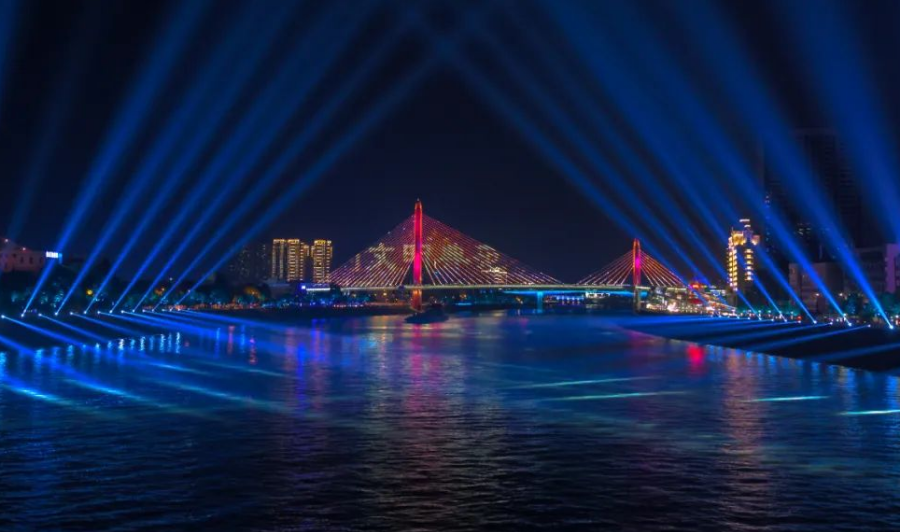
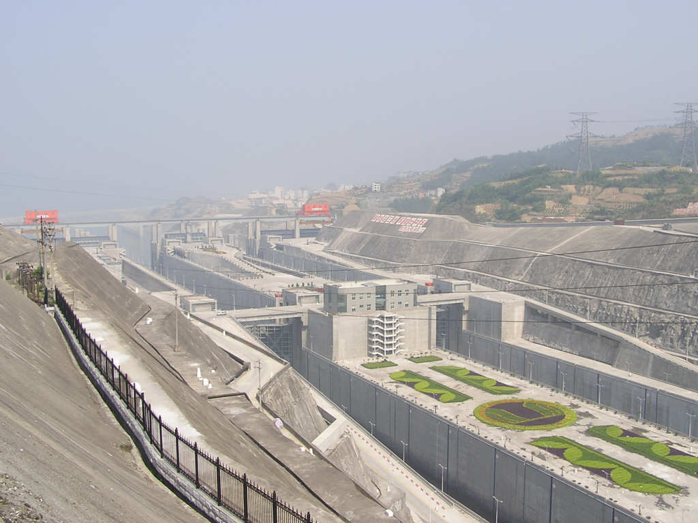
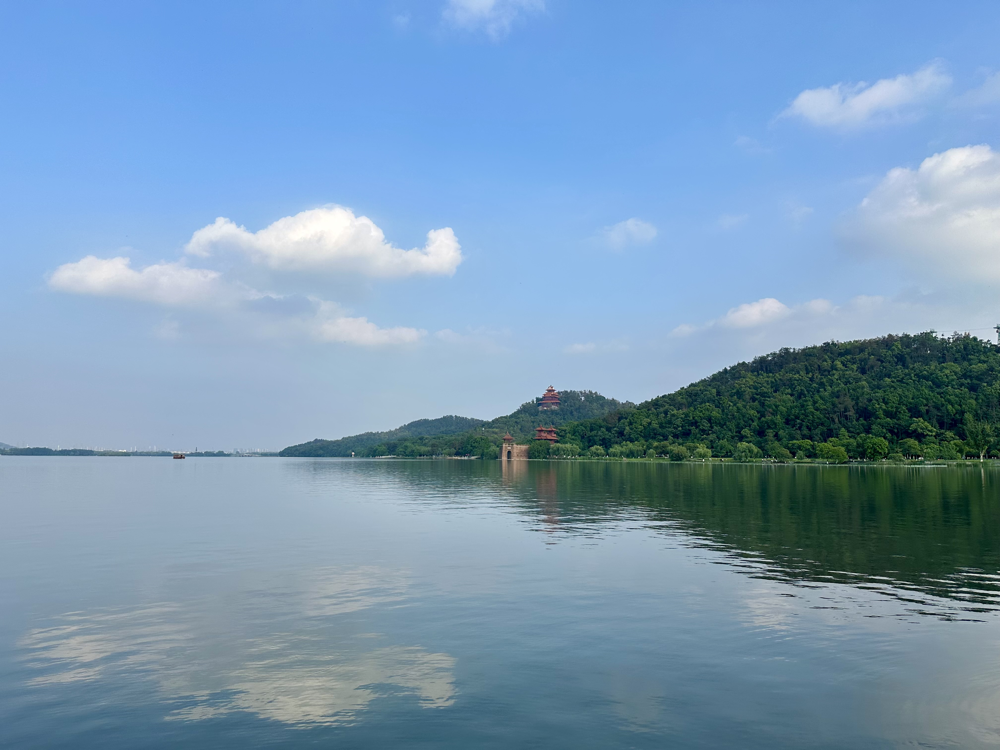

武汉×宜昌三峡（升船机）家庭亲子行程｜11/21–25
提示：湖北省博物馆周一闭馆，请安排在周五/周末时段。
5 天旅行时长
3 城区武汉｜宜昌｜三峡大坝
升船机11/22 一日深度
亲子友好步行适中＋夜游
11/21（周五）武汉 → 宜昌｜抵达＋夜游

宜昌·长江夜游（示意图）
06:37
Z47 抵达武昌（已购），出站洗漱/早餐
07:10–07:50
武昌站 → 汉口站（打车约35–50分钟；早高峰适当加时）
09:23
汉口站乘 D619 前往宜昌东（约2h10m；以12306为准），预计11:30–11:40 抵达
缓冲：若 08:30 仍未到汉口候检，改签 10:00±30 分窗口下一班
缓冲：若 08:30 仍未到汉口候检，改签 10:00±30 分窗口下一班
11:20–12:00
打车至市区酒店（夷陵广场/万达/滨江一线）寄存/入住
12:00–13:30
午餐休整
15:00–17:30
三游洞/滨江公园/宜昌博物馆（三选一）
19:30–21:00
长江夜游（宜昌港短程夜航；夷陵广场→宜昌港 驾车约9分钟）
今日清单： 武昌→汉口→D619→入住→夜游；重要：08:30未到汉口候检→改签10:00±30分下一班。
武昌→汉口 出行对比：
- 网约车/出租：35–50 分钟（高峰 60+），门到门、体力消耗小；遇拥堵需提前出发。
- 地铁备选：Line 4（武昌站）→ 洪山广场换 Line 2 → 汉口站，约 35–45 分钟（含换乘步行）；高峰拥挤，带娃+行李舒适度一般。
11/22（周六）宜昌｜两坝一峡＋三峡大坝“升船机”体验

三峡大坝（示意图）
07:00
早餐
07:40–08:20
前往集合点/码头（以商家行前通知/登船短信为准）
08:30–17:30
典型流程：
- 游船游览西陵峡东段
- 三峡大坝景区：185平台、截流纪念园等
- 升船机观光（名额稀缺，需提前锁定）
- 返港/送回市区
18:30–20:00
晚餐＋早休（次日返汉）
今日清单： 两坝一峡＋升船机全天；优先升船机（更震撼、时间更可控、亲子友好）。
11/23（周日）宜昌 → 武汉｜省博＋黄鹤楼/户部巷

武汉·黄鹤楼（示意图）
07:30–11:30
早餐＋早班返汉（优先午前到）
12:00–13:00
午餐＋办理入住（武昌站附近）
14:00–16:00
湖北省博物馆参观（免费预约）
15:10–15:40
曾侯乙编钟演出（单独时段票）
17:00–18:00
黄鹤楼公园 或 户部巷（择一）
今日清单： 返汉→省博＋编钟→黄鹤楼/户部巷；重要：省博周一闭馆，务必今日完成；晚住武昌站附近保障 11/25。
11/24（周一）武汉｜轻松城市日

武汉·东湖（示意图）
09:30–12:00
东湖绿道/江滩/江汉路步行街（择一）
12:00–13:00
午餐
14:00–17:30
轻量行程 + 备物整理（为 11/25 出发做准备）
今日清单： 轻松逛＋收尾整理；重要：晚住武昌站附近，保障 11/25 K531。
备选（三选一）：
备选（三选一）：
- 自然＋人文：武汉植物园/东湖磨山（索道/小火车）→ 楚河汉街午餐 → 湖北美术馆＋听涛景区
- 校园银杏＋手作：武大/中南财大银杏 → 昙华林简餐 → 汉阳造/1905文创园亲子手作（1–2h）
- 雨天室内：武汉科学技术馆/自然博物馆 → 光谷K11/万象城午餐 → 极乐汤/亲子汤池 或 室内攀岩/蹦床
公共交通与出行策略
- 武昌站 ↔ 黄鹤楼/户部巷：地铁4号线/公交或打车（亲子建议打车，约14分钟）。
- 武昌站 ↔ 省博/东湖：公交401/411等或打车（15–25分钟，高峰更久）。
- 宜昌东 ↔ 夷陵广场/滨江：公交K01约40–50分钟；打车20–30分钟。
- 夷陵广场 ↔ 宜昌港：公交20–30分钟；打车9–15分钟。
- 两坝一峡集合：优先“含接送”产品；以出团通知为准。
- 跨站换乘：武昌→汉口优先网约车，按50分钟＋机动20–30分钟估算。
- 原则：≤3公里且带娃/赶时段→打车；其余优先地铁/直达公交。
美食推荐（亲子友好）
- 武汉｜楚河汉街：热干面/豆皮等“少量打卡”，正餐选评价高的简餐/粤式。
- 武汉｜户部巷：以打卡为主，避免重油重辣；正餐移步周边商场。
- 宜昌｜滨江/夷陵广场：本地鱼类、清淡汤面；夜游当天少油辣。
- 点单策略：一荤一素一汤＋主食；少糖少辣，备酸奶/小果。
必吃清单（适度打卡）：武汉：热干面、三鲜豆皮、糯米包油条、排骨莲藕汤、糯米藕、微辣鸭脖；宜昌：清江鱼/刁子鱼（清蒸/少辣）、宜昌凉虾、土家酱香饼（少辣）、三峡苕粉。
就近就餐建议：
省博/东湖/楚河汉街：选商场内简餐/粤式/日式，17:30前错峰；
武昌站/黄鹤楼/户部巷：正餐选环境佳的家庭位，小吃少量打卡；
宜昌夷陵广场/滨江/宜昌港：本地清淡为主，夜游日前后少油少辣。
省博/东湖/楚河汉街：选商场内简餐/粤式/日式，17:30前错峰；
武昌站/黄鹤楼/户部巷：正餐选环境佳的家庭位，小吃少量打卡；
宜昌夷陵广场/滨江/宜昌港：本地清淡为主，夜游日前后少油少辣。
酒店推荐与选择策略
宜昌（11/21–22）
- 位置：夷陵广场/万达/滨江，便于码头与集合点
- 预算：¥300–450 经济舒适；¥450–700 进阶舒适
- 要点：双床/家庭房、可免费改退、含早更省时
武汉（11/23–24）
- 位置：武昌站附近，保障 11/25 出发与返汉入住
- 要点：关键点 ≤20 分钟优先；动线简单安全
- 亲子：儿童早餐/加床政策需确认
武汉·武昌站附近（11/23–24）
- 房型：双床/家庭房，连通房优先
- ETA：至武昌站 5–10 分；至黄鹤楼 14 分
- 亲子：儿童早餐/牙刷拖鞋/加床价
- 噪音：避临街/临轨；要高层或背街
武汉·东湖/楚河汉街（备选 11/21）
- 房型：双床或一大一小；可加婴儿床
- ETA：至省博 5–15 分；至东湖 5–10 分
- 亲子：步行可到商场与绿道，晚餐选择多
- 提醒：晚间等位多，尽量早用餐
宜昌·夷陵广场/滨江（11/21–22）
- 房型：双床/家庭房；含简早更省时
- ETA：至宜昌港 9–15 分；至集合点 10–20 分
- 亲子：夜游后晚归动线与夜灯
- 提醒：可否延迟退房，配合次日行程
下单核对清单
- 免费改退窗口/到店付
- 到站/景点真实 ETA（高峰）
- 加床/儿童早餐/停车费用
- 发票与押金政策
票务与行程提醒（下载到日历）
- 11/21 D619｜09:23 汉口 → 宜昌东
建议08:30前到汉口候检；兜底改签 10:00±30分添加到日历
- 11/21 地铁备选｜武昌站 Line 4 → 洪山广场 换 Line 2 → 汉口站
预计 35–45 分钟（含换乘步行）；高峰拥挤，带娃+行李舒适度一般添加到日历
- 11/22 两坝一峡·升船机｜07:40–08:10 集合
以商家行前通知为准；优先固定集合点（夷陵广场/万达/滨江）添加到日历
- 11/23 湖北省博物馆｜14:00 参观＋15:10 编钟
周一闭馆；请提前完成实名预约与时段票添加到日历
- 11/25 K531｜11:00 武昌 出发
建议 09:30 退房，10:00–10:40 候检添加到日历
说明：点击“添加到日历”会下载 .ics 文件，双击即可导入系统/手机日历；你也可转发给家人共享。
11/25（周二）武汉 → 返程（K531｜武昌 约11:00）
07:30–08:30
早餐
08:30–09:30
打包退房
09:30–10:00
前往武昌站
10:00–10:40
安检候车
11:00
乘坐 K531 返程（以车票为准）
关键票务清单
- 两坝一峡＋升船机 一日游（11/22，宜昌出发）— 确认集合点/上车时间/是否含中转
- 官方直连（含接送/固定集合点；以当日为准）：
- 宜昌交运集团｜小程序“宜昌交运集团”可咨询本周班期与集合点
- 三峡游轮中心官方｜小程序“三峡游轮中心”（早班/午班，夷陵广场/万达/滨江集合） - 平台自营旗舰（筛“官方/自营”“可退改”“含接送”）：
- 携程活动 · 搜索“宜昌 两坝一峡 升船机 接送” - 建议班期（以行前通知为准）：早班集合07:40–08:10 ｜ 开航约08:30 ｜ 返程约17:30；优先固定集合点（夷陵广场/万达/滨江），从酒店打车≤15分钟。
- 退改范畴（以下单条款为准）：≥24–48h免费改退；水位/天气停航改期；儿童占座/保险单独说明。
- 湖北省博物馆 免费预约（11/23 下午）＋编钟演出时段票（约15:10）
- 高铁：11/21 早 武汉→宜昌东（D619 09:23）；11/23 上午 宜昌东→武汉
- 酒店：11/21–22 宜昌市区；11/23–24 武昌站附近
建议在出发前72小时内完成所有预约，并于行前48小时核验短信/邮件。
预算（估）
- 城际交通：￥800–1,500
- 市内交通：￥400–700
- 酒店（4晚×￥400–700）：￥1,600–2,800
- 门票/船票：￥900–2,100
- 餐饮：￥1,500–2,500
- 合计：约￥5,200–9,600（10k预算充足）
带娃与天气
- 晚间10–15℃，带轻薄羽绒/冲锋衣与一次性雨披
- 船上风大：注意保暖；可带小望远镜、简易垫脚
- 行走多：穿舒适运动鞋；备晕车/晕船贴
如升船机名额售罄：备选“两坝一峡经典线＋葛洲坝船闸过闸体验”。